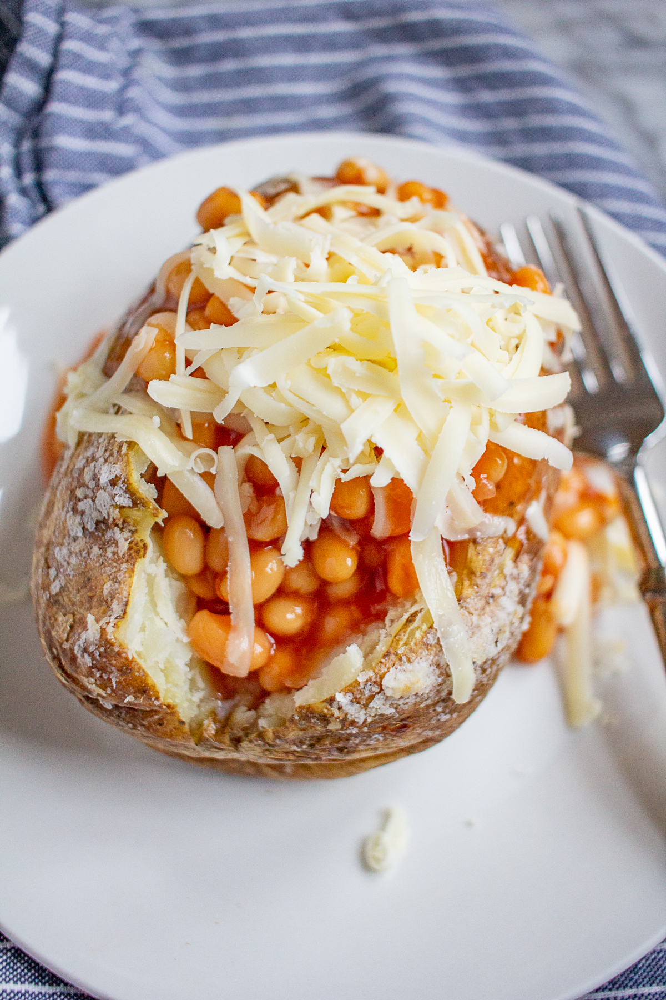

Ultimate Jacket Potato With Beans

Description
This is a classic meal for those days where you just want some good old fashioned comfort food with
no preparation, whatsoever! Just bung it in the oven and then go and put your feet up!
Ingredients
- 1 baking potato
- olive oil
- beans
- smoked paprika
- cheddar cheese
Method
- Turn the oven to 200c. While it pre-heats stab the potato all over with a fork and place it in a baking dish or on a baking tray.
Drizzle a bit of olive oil over the potato and generously sprinkle some salt and pepper over the spud. Rub the oil
and salt and pepper into the potato. Pop it in the oven for a minimum of 1 hour.
- Check on your potato and see if the skin is crisping up nicely. Feel free to leave the potato
in for even longer if you want it extra crispy. The longer you leave it in the oven, the fluffier the potato is inside, and the more
delicious the skin. When the potato is nearly done heat a tin of beans through on the hob and add a nice generous teaspoon of smoked paprika.
- Cut the potato down the middle and smash a dollop of butter into the potato filling with a fork. Give it a sprinkle of salt and pepper. Serve with the hot beans
and as much grated cheddar cheese as you like.
Return to Home